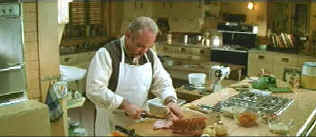

| Felicia's Journey (SE) /A-,A |
| Artisan/1999/116/ANA 2.35 |
You might say Felicia's Journey is a reflection of Atom Egoyan's journey as a director. Always interesting, this is the director's most polished work. A chill runs through Egoyan's oeuvre, but with this latest film, a more mature sympathy for the characters comes through. Though I admired the writer/director's work, this hint of warmth is a welcome addition.
 |
| Meticulous preparation makes the meal. ©Artisan |
A young woman makes the journey from
Ireland to England to find her lover. Her journey is
precipitated by estrangement from her father. She meets
Hilditch, a factory food service manager, by chance, as
she searches for a lawnmower factory where she thinks her
boyfriend works. Hilditch is kind, helpful,
and after several meetings, he and Felicia form a bond. Hilditch
lives alone, surrounded by artifacts of his past. He follows
routines in his life as slavishly as he follows the cooking show
recipes that accompany his kitchen preparations. As Felicia and
he become more involved, more questions arise about Hilditch
with Hitchcockian perversity. Hilditch is a character that
belongs alongside Peeping Tom's
(Michael Powell) Mark Lewis or even Psycho's (Hitchcock)
Norman Bates.
Bob Hoskins is simply amazing in the
role of Hilditch, the factory food service manager, a slave to his childhood
horrors. Hoskins keeps Hilditch under perfect control in his kitchen
as he meticulously follows the television
instructions of an old cooking show, then sits down to
formally dine on a feast fit for celebration. The actor
communicates that something is amiss, but the audience cannot
put their finger on it. Egoyan makes these scenes extremely
romantic. Camera movement, music, set details, all enhance the
feeling. When Hilditch meets young Felicia, it's all so
innocent, yet the edge in the actor's demeanor keeps you off
balance. Elaine Cassidy is a fresh face in the role of Felicia.
Together with Hoskins, she carries the film. Egoyan brings his
actors to a slow boil with wonderfully paced story-telling.
Director Egoyan orchestrates each aspect
of Felicia's Journey with purpose and
certainty. The camera transforms the ordinary with seductiveness. The choice of the romantic ballad What a
Wonderful World sung by Britisher Malcolm Vaughn casts
creates a funhouse mirror cast to many scenes. Felicia's
Journey makes you ponder just what goes on behind the closed
doors of your neighbors.
All the secrets of Felicia's Journey
are shared on a erudite audio commentary from Atom Egoyan. The
writer/director's analysis brings great clarity to the
mysterious journey. Filmed cast and crew interviews give further
insight into the actors interpretations of the characters. In
addition, you can watch a collection of seven of Hilditch's girl
tapes or check out Gala's cooking show, dressed and undressed.
Want Gala's recipes? You can copy them onto index cards and
practice in your own kitchen, but don't get carried away. A
making of featurette and trailers and TV spots complete the
superb special edition package.
As graceful a transformation to DVD as you
could want, Felicia's Journey is transferred with the
same care that director Egoyan made his film. Consistently sharp
with no edge enhancement, picture detail is splendidly rendered.
Depth of color is extraordinary with excellent subtlety of skin
tones. The Dolby Digital 5:1 tracks treat the music with lush,
rich tones. A haunting film, a stunning DVD!

Need a daily fix of movie quotes. Reel Quotes Newsletter has the answer. Click on the Reel Quotes symbol symbol for more.

Check out these selections from our DVD Review Archive. New releases are constantly in our face, but catalog gems should not be forgotten.

The
Feature
Archive has articles ranging from Akira
Kurosawa to Blonde
Bimbos.

Join the editor and his family on a trip through Roman movie sites in this unusual feature.


The Big Combo
has style to spare in reviewing films and producing feature
articles. Check out their special "Lingo" section.

Reviews of affordable remote
controls in the market place. Codes and tips as well.
DVD Deals may be the best site for all you high-tech bargain hunters. This site helps you find coupons and cheap dvds at all the major online stores.

Home to The
American Society of Cinematographers. Includes
features from American Cinematographer Magazine and more...